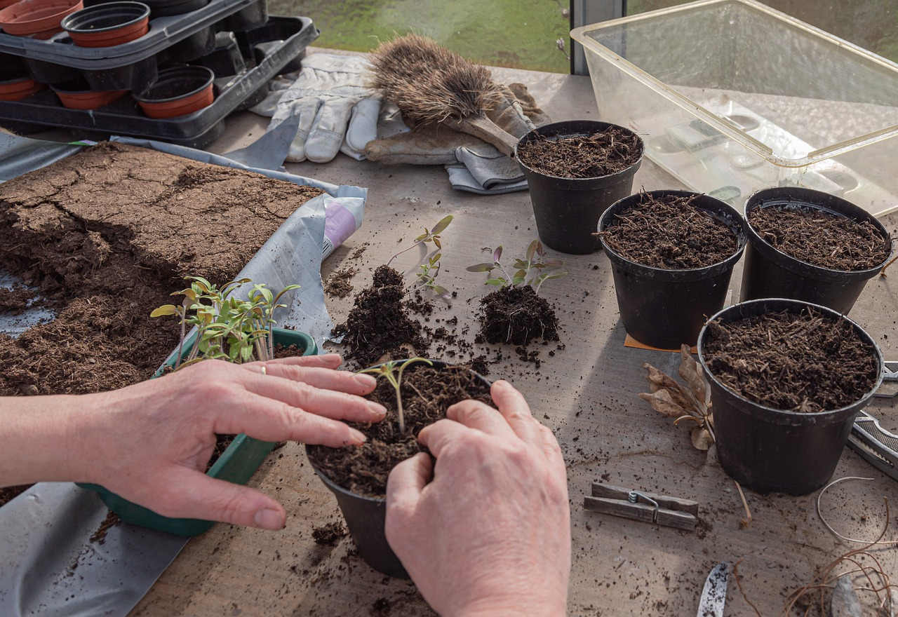
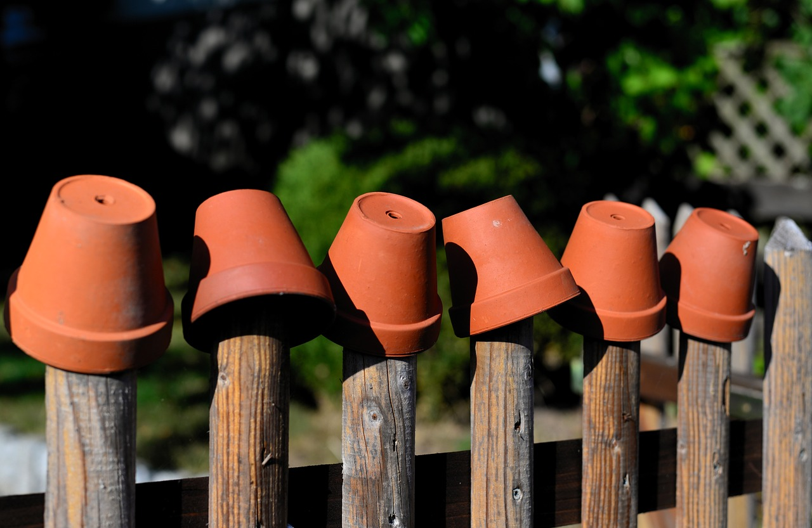
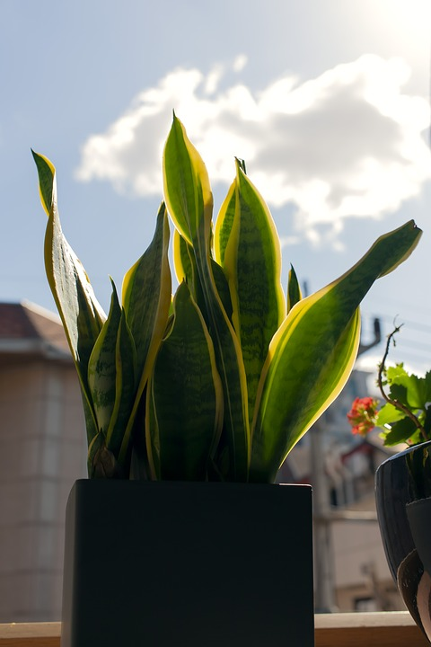
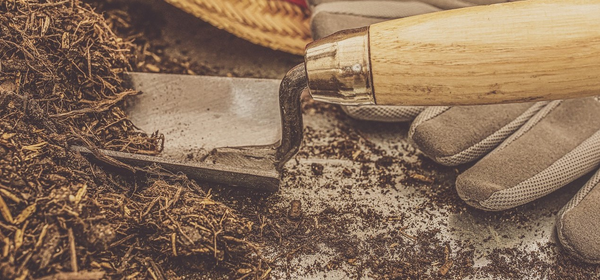

Planters
5 Steps Plant Parenting Guide for Beginners
Watering
watering right amount of water is essential part of the plant care. Over or under watered soil can damage plant's root and stop their growth. Before watering your plants always determine whether your plant need water or not. This can be determine by sticking your finger into the soil. If the soil is damp then you do not require watring you plant but if it feels dry, you can water your plant. Remember! this trick works for most plants but not all of them therefore its best to know some basics about your plant. Some plants can also be determined by their appearance. If plant looks yellow in colour and dry when you touch it then its means plant is under watered. If plant is too soft and have black leaves then it is the signof over watered plant.
Use plant Pots with drainage holes
Pots with drainage holes allow access water to pass through which prevent overwatering issue. Another great reason to use pots with drainage holes is to allow oxygen to freely reach to the plant's roots.
Place your Plant in front of passable sunlight
Just like water, an adequate amount of sunlight exposure is essential to go through a process called "photosynthesis", which provides energy to your plants
Learn your Plant Type
Learning basic characteristics of your plants will help you identify it's needs better, resulting proper plant management. You can access variety of information about plants online and in your local libraries.
fertilize Your Plant
Just like humans, Plants can also suffer from nutritional deficiencies. If your plant's leaves are turning yellow then it is likely that it sufferes from chlorosis which mean it is lacking particular or several nutrient needs. Therefore, Fertilizers are a good way to cater your plants nutrition needs. Frequency of fertilizing plants depend on your plant type but most plants need fertilizer from two weeks to 3 months time apart from winter as indoor plant growth slows in winter so it does not require fertilizers.